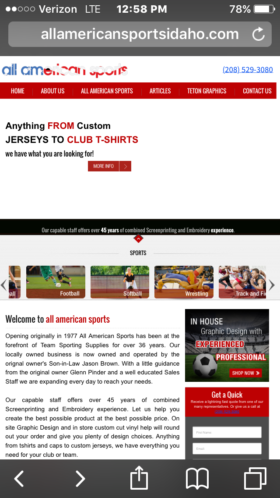

Visitor Analysis and Persona
Zumies
URL: Zumies.com
Target Audience
- It seems that the site is well directed towards a wide range of people more interested in skater-type clothing. This is specifically ages 12-35 with an average college income. This style is not geared towards older people.
- The site does a great job of meeting the visitors needs with simplicity along with a number of discounts, deals, and new arrivals visibal on nearly every page.
- It breaks the products down into gender, season, clothing type, and even color with filters to narrow your search.
- The site was simplified with large, easily visibal images to guide your search. This made the mobile browsing easy and enjoyable.
- It seems that the site was geared towards people using more mobile devices. Younger ages to mid 30's are people that are on the go and good on their phones. The site was set up perfectly for these individuals.
Persona
Tony Burnside
- JOB:works at skatepark/college student
- ENVIRONMENT:saktepark, ski hill' friends basement
- REASON FOR VISIT: Needing new cool cloths
The principles of proximity is exemplified in the way that Zumies has grouped together the different genders and types of cloths to make searching faster and more efficient. It would be a mess if the guys and girls cloths were all mixed together. They have also put groups of certain deals, brands, and types of cloths. This way they are able to group things together to help catch people’s attention and help the experience be more user friendly.
Screenshot of Example of Proximity
Bad Example
All American Sports
allamericansportsidaho.com
This website is incredibly hard to read and navigate. First off, the buttons and icons are so small that hoyu can barely read them or see the image. The other problem is there is just too much writing. No one wants to log onto a website like this to read a novel